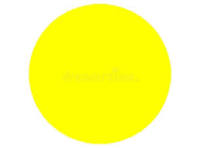

Texto
Procedimientos de evaluación:
- Observación sistemática
- Intercambios orales
- Producciones del alumnado
Actividades de evaluación:
- Portafolio: "Dibujo My daily routine"
- Archivo digital: grabación miniaudio
- Juegos orales de identificación y repetición
Instrumento de evaluación:
- Lista de control
- Anecdotario
- Semáforo de autoevaluación
Rúbricas de evaluación dibujo
| Excelente | Adecuado | En proceso | Iniciado | |
|---|---|---|---|---|
| Criterios 3 | Incluye las 5 rutinas (3.1) (2.5) | Incluye 4 (3.2) (1.75) | Incluye 3 (3.3) (1.50) | Incluye 1-2 (3.4) (1.25) |
| Criterios 4 | Las cinco rutinas están bien ordenadas (4.1) (2.5) | 1 error en el orden (4.2) (1.75) | 2 errores (4.3) (1.50) | No sigue orden (4.4) (1.25) |
| X | Muy claro se reconocen los dibujos (2.5) | Claridad en el dibujo (1.75) | Poco claro (1.50) | No se reconoce (X) |
| X | Mucho esfuerzo y muy bien acabado (2.5) | Buen esfuerzo (1.75) | Algo descuidado (1.50) | Muy descuidado (X) |
- Actividad
- Nombre
- Fecha
- Puntuación
- Notas
- Reiniciar
- Imprimir
- Aplicar
- Ventana nueva
Rúbricas de evaluación minipodcast
| Excelente | Adecuado | En proceso | Iniciado | |
|---|---|---|---|---|
| Criterios 3 | Se escucha muy claro, ritmo adecuado. (2.5) | Se entiende casi todo. (1.75) | Hay partes difíciles de oír. (1.50) | No se entiende. (1.25) |
| Criterios 4 | Pronuncia correctamente todas las palabras. (2.5) | Pronuncia bien la mayoría. (1.75) | Se equivocó varias veces. (1.50) | No reconoce o no pronuncia las palabras. (1.25) |
| X | Incluye todos los datos. (2.5) | Falta 1 dato. (1.75) | Faltan varios datos. (1.50) | No incluye datos. (X) |
| X | Participa con entusiasmo y autonomía. (2.5) | Participa con ayuda mínima. (1.75) | Necesita ayuda frecuente. (1.50) | No participa. (X) |
- Actividad
- Nombre
- Fecha
- Puntuación
- Notas
- Reiniciar
- Imprimir
- Aplicar
- Ventana nueva
Lista de cotejo: Proceso de aprendizaje
Lista de cotejo – Proceso de aprendizaje
[ ] Reconoce las cinco rutinas en inglés.
[ ] Utiliza gestos para apoyar la comprensión.
[ ] Participa de forma activa en las actividades orales.
[ ] Ordena correctamente las tarjetas.
[ ] Realiza el dibujo con las cinco rutinas.
[ ] Graba su mini podcast con ayuda.
[ ] Respeta turnos y normas básicas.
Momentos de evaluación
¿Cuándo será evaluado el alumnado?
- Sesión 1: Comprensión oral, participación, juegos interactivos.
- Sesión 2: Dibujo final (evaluado con la rúbrica).
- Sesión 3: Mini podcast (evaluado con la rúbrica).
- A lo largo de toda la SdA: Actitud, interés, esfuerzo y uso de gestos.
- Final: Autoevaluación mediante semáforo.
Semáforo de Autoevaluación
Autoevaluación: Semáforo
El alumnado marcará cómo cree que lo ha hecho:
 Lo he hecho muy bien
Lo he hecho muy bien

Me ha costado un poco🔴 Necesito más ayuda